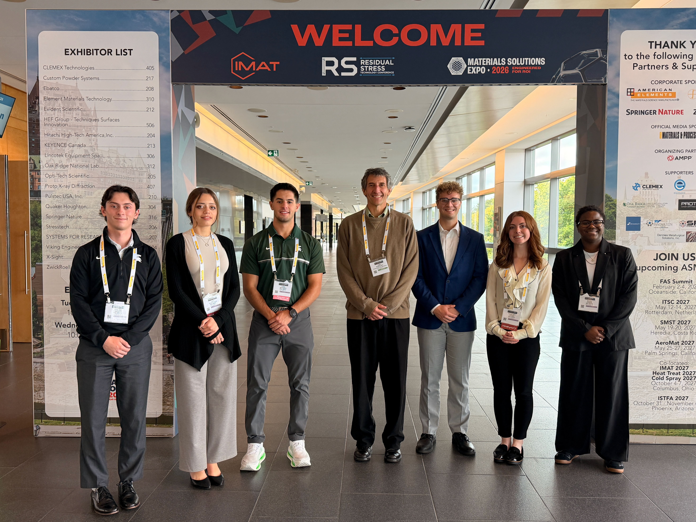

MSES Blog
Check out what we're up to!
MSU MSES Attends IMAT 2026

We had an amazing time hearing talks from leading materials professionals, networking, and exploring our future careers at the IMAT conference in Quebec City, Canada. We are so grateful to our fellow ASM members for being so welcoming and making us feel like part of a great community. It's certain that we're all excited for what could be next!
M. Reed Blocksome, President
Welcome Spartans!
If you're new on campus or back for another round, MSES extends a warm welcome. I hope you are as excited for this upcoming semester as we are!
I remember one of my first few days into school- being so excited when I finally bumped into another MSE major. As a freshman in materials science, it can be difficult to feel like part of a group when you don't have many MSE classes. So, one of our biggest goals is to foster that community. The friends I've made through this major have been life-changing. I hope you'll come join us!
We will be kicking off our weekly meetings on September 7th with an introduction to the major and the club. The helproom will be open as well.
Catch'ya there,
M. Reed Blocksome, President
Check out the New MSES Site!
We've officially launched our new web presence to better serve the MSU Materials Science community. Stay tuned for our upcoming trip to IMAT and future activities!
I hope you enjoy the website,
M. Reed Blocksome, President